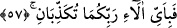

“Bunlardan önce onlara ne insan ne de cin dokunmuştur.” Bu cümle “Gözlerini
yalnız eşlerine çevirmiş güzeller vardır” cümlesine sıfattır.
Kamus’ta, “tams”, “dokunmaktır,” denir. Mânâ şöyle olur; eşlerinden önce insan
cinsinden olan o güzel kadınlara hiçbir erkek insan, cinlerden olanlarına da hiç bir
erkek cin dokunmamıştır. İnsanlar için tayin edilmiş, karar kılınmış hûrîler ki
âdemoğlunun eli ona yetişemez, yine cinler için tayin edilmiş hûrîlere de yine cinler
tasarrufta bulunamaz. O kadınlar, hiç dokunulmamış hayvanların, hiç otlatılmamış
olduğu korular gibidir. Bu âyet-i kerîme’de kadınları elde etmeğe bir teşvik vardır.
Çünkü, insanlar dullardan çok bâkirelere ilgi duyarlar. Ayrıca, cinlerin cennetlik
olduklarına ve insanlar gibi onların da eşleriyle temas ettiklerine delildir. Bu temiz
kadınların kendilerine verileceğinin hatırlatılması bunu gerektirir. Şâyet cinler insanlar
gibi eşlerine dokunmayacak durumda olsalardı, onlara bu nimetin verileceği
hatırlatılmazdı. Ancak, dokunma esnasında onların insan suyu gibi bir suları olmayıp
onun yerine hava vardır. Dişilerinin rahimlerinde döllenmeye bu sebep olur.
Fütûhât-ı Mekkiyye adlı eserde de şunlar kaydedilmiştir; bu durum, insanlarla cinler
arasında evliliğin olamayacağını çağrıştırır. Aksi de öyledir. Âlimlerden bir çok kişi bu
evliliğin sahih olduğu görüşündedir. Bunlardan biri de Âkâmü’l-Mercan adlı eserin
sâhibidir.
İbn Abbâs (r.a.), muhannesler; yâni erkek ve kadın organlılar cinlerin çocuklarıdır,
demiştir. Zira Allah ve Rasûlü (s.a.) eşi hayızlı iken erkek eşin onunla cinsî ilişkide
bulunmasını yasaklamışlardır. Eşlerin hanımı hayızlı iken birleşmeleri durumunda
şeytan erkekten önce işe karışır, kadın hâmile olunca da mühannes/eş cinsli çoçuk
doğar.
Mücâhid’in görüşü de böyledir. Bir erkek eşiyle birleşir de besmele söylemezse
cinnin babası olan cân erkeğin ihliline/idrar deliğine dürülerek onunla beraber temas
eder. Bu, cinlerin insan gibi cimâ ettiklerine ve insanla birleştikleri takdirde hâmileliğin
olacağına kesin olarak delâlet etmez. Ancak, besmelesiz yenen yemeğe şeytanın ortak
olduğu gibi, hayız hâlinde veya besmelesiz gerçekleşen birleşmeye onunla beraber
cinnin ortak olduğuna delildir. Bu da insan özelliğini bozmak ve lâyık olduğu makamına
zarar vermektir. Allah daha iyi bilir.
Cumhurun görüşüne göre, gözlerini yalnız eşlerine çevirmiş olan cennet hûrîlerinden
bu kadınlar orada yaratılmışlardır. Ayağa düşmemişler ve kendilerine el
sürdürtmemişlerdir.
Şa’bî ve Kelbî demişlerdir ki; onlar dünya kadınlarından olup, gerek bâkire gerekse
evli olsunlar, ikinci yaratılışlarından sonra onlarla hiç kimse birleşmemiştir.